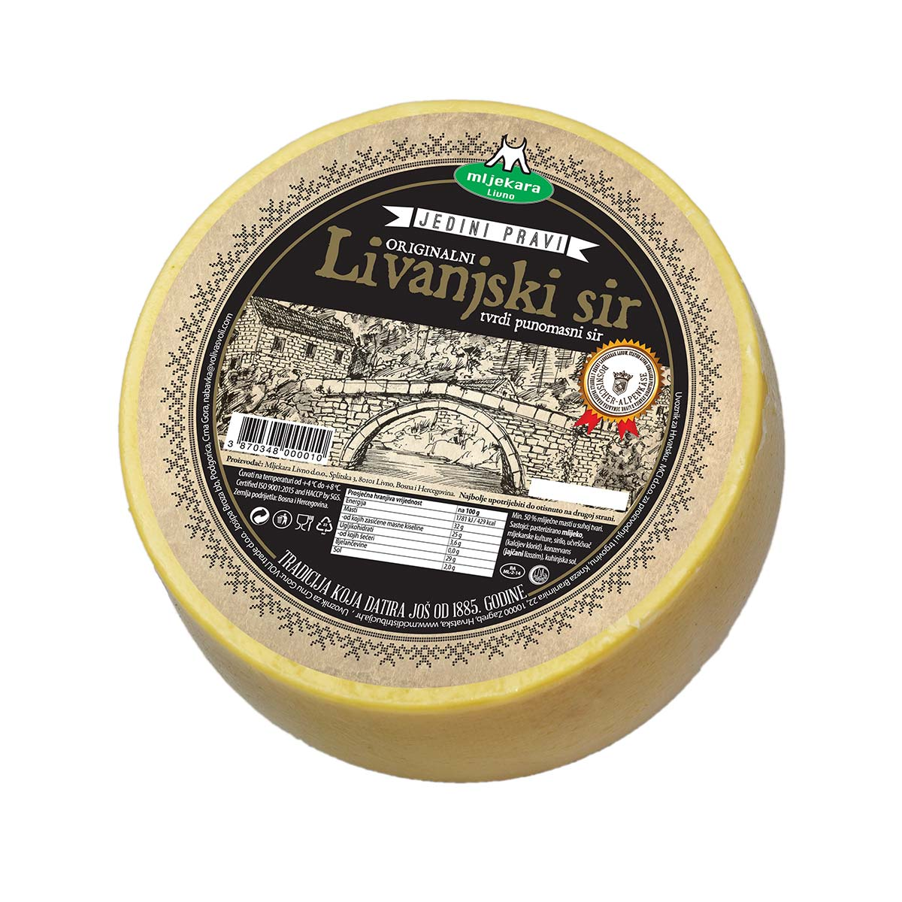

Ja sam Kristina Rajic. Imam 30 godina i dolazim iz Livna (mjesto koje je poznato po Livanjskom siru (najboljem siru), Mati Rimcu, Zlatku Dalicu...)
Studirala sam i zivjela u Zagrebu 10 godina. Moje prvo radno iskustvo bilo je u Iskonu, a zatim u jednoj maloj marketinskoj agenciji. Preselila sam se u Hamburg prosle godine u ovo vrijeme i otkrila da me zanima UX, a nakon toga otkrila da zelim postati i Frontend developer.
 1/2